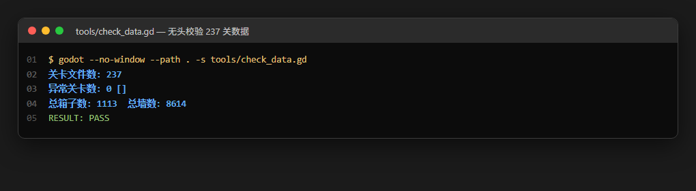
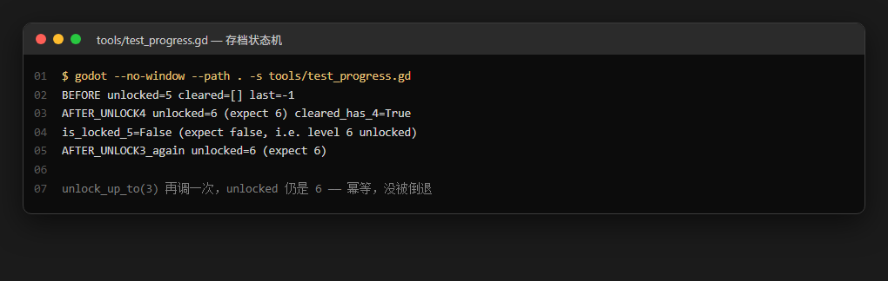
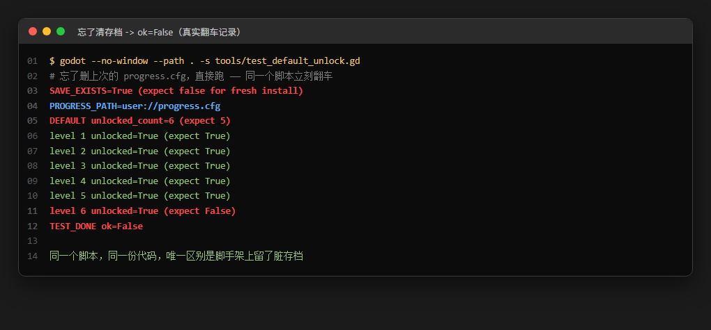
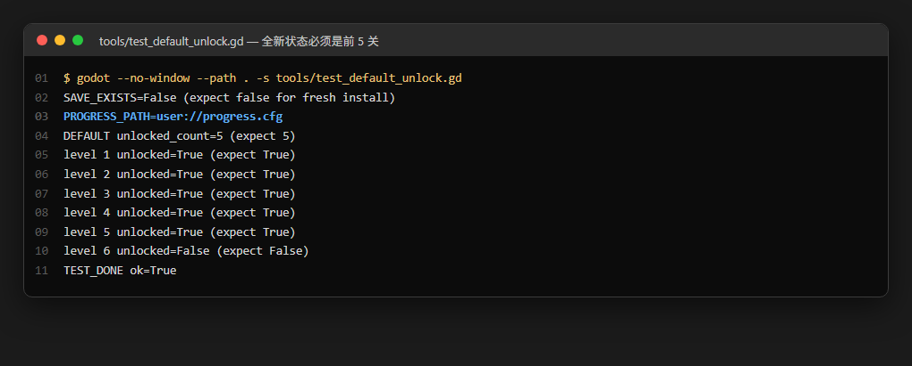
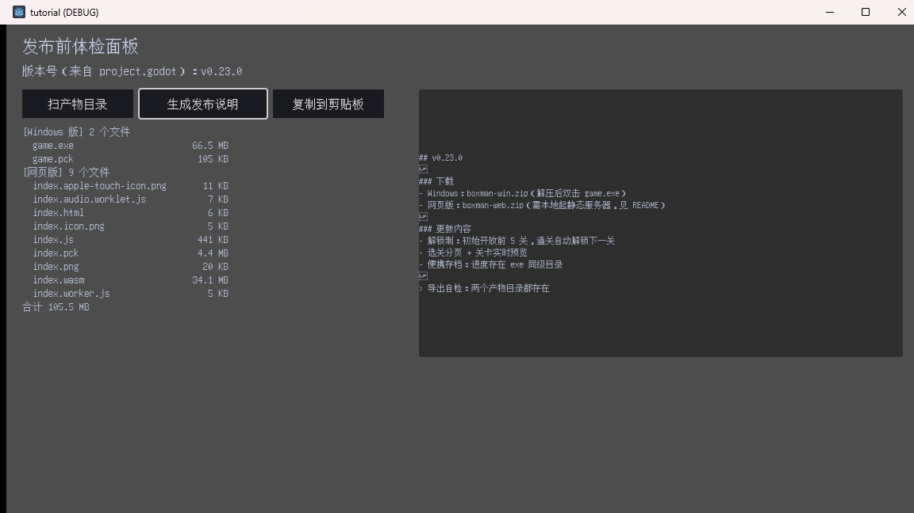
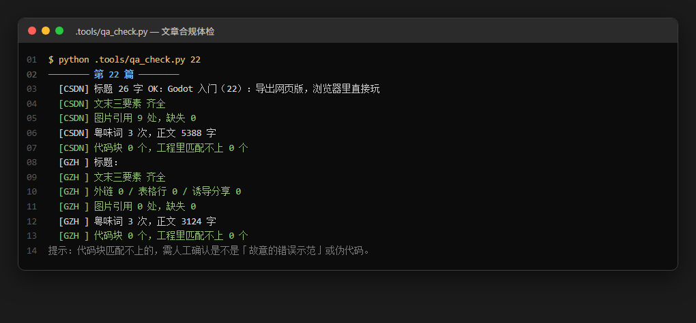
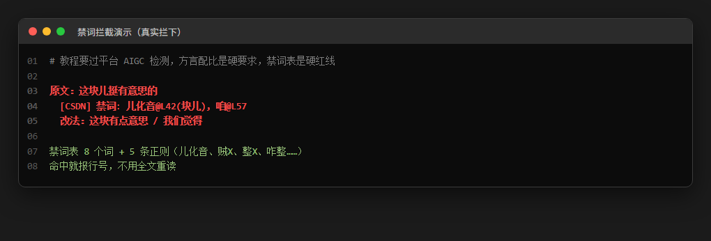

大家好，我是「山岚的运维笔记」。
前 23 篇讲的是怎么把游戏做出来。呢一篇讲嘅系撑起嗰 23 篇嘅嘢——冇佢哋，我一日大概净系写得一篇半，然后就开始怀疑人生。
每篇要做的事：写代码、跑起来看、截图、核对截图、写文章、查合规、改格式、再截图。
最容易漏的是查合规。禁用词、标题字数、文末三要素、公众号不能有外链不能诱导分享——全凭手感检查，漏一次就是发出去才发现，然后回来返工。
手工下来，一篇文章的机械工作量大概 40 分钟。24 篇就是 16 小时。呢 16 个钟入面，冇一分钟系喺度谂技术。
所以我写了工具。整套下来 800 行左右，最后每篇的机械部分压到 3 分钟。省落嚟嘅时间够我再写四篇——或者出去食餐煲仔饭，我拣后者，唔使咁拼。
Godot 的 -s 参数可以直接跑一个脚本，跳过整个游戏启动流程。这是做校验的地基。

三个要点都是被坑出来的。
第一，脚本要 extends SceneTree 配 _init()，不是 _ready()。-s 模式下没有场景树给你挂节点，SceneTree 本身就是根。
第二，必须显式 quit()。不写这一行，脚本跑完引擎不退出，进程挂在那儿占着单核。我有一次跑批处理，24 个进程全部挂喺度，任务管理器睇落好似开咗一围麻将。
第三，autoload 在 -s 模式下不会加载，global.gd 得自己 new 一份出来，不然方法根本不存在。
最后那行 RESULT: PASS 是整套校验的判定点。CI 里只要 grep 这个字符串，PASS 才算过。唔好靠肉眼睇晒全部输出。

存档类测试是最容易骗人的——它会因为上一次跑测试留下的文件而通过或失败，取决于你上次干了什么。
我给每个存档测试都加了一行 BEFORE，专门用来暴露环境状态。看图2 那次：unlocked=5、cleared=[]、last=-1，干净的全新状态，测试有效。如果这里显示 unlocked=6、cleared=[4, 3]，说明上次跑测试的存档还在，这次结论全部作废。
我把这条写成铁律：任何存档测试，第一件事是打印当前状态；测试失败时，第一件事是看这行干不干净。省下的怀疑时间比脚本本身还多。
幂等那两行也别省。unlock_up_to 如果实现成「直接赋值」，第二次调小索引就会把已解锁的关卡锁回去——玩家通关后倒退一格，进度就没了。呢种 bug 代码睇落完全正常，肉眼极难发现。
写「全新安装」测试时，我第一次跑是这样的：

同一个脚本、同一份代码，唯一唔同嘅系我上一轮测完冇删走存档文件。
这个测试设计得挺好，SAVE_EXISTS 那行直接把原因摊开了。但它同时提醒我：脚本正确不等于环境正确。测试脚手架本身也是需要被管理的代码。
我现在的做法是让渲染脚本自带清理，还要加一道保险——我的用户目录里有几个手工备份的存档，不能顺手删掉。凡是清理脚本，第一件事是排除掉「看起来像垃圾但其实是数据」的东西。
清干净再跑：

另外注意到：跑完这个只读测试，存档目录里没有多出新文件。这说明脚本真的只读，没偷偷写档——这类「测试污染了被测系统」的情况比测试失败更麻烦，因为它会让后面的测试全部不可信。
Godot 游戏窗口有个好讨厌嘅特性：鼠标点唔入去。
我用 SendInput、mouse_event、PostMessage、SendMessage 全试过，游戏窗口一律不响应。方向键能进，Tab 能跳，空格能确认。睇落似系有个全屏浮层喺中间劫持输入。
于是截图自动化只能键盘驱动。方案是把步骤写进 JSON，脚本照着执行：启动、等、按键、截图。

这个设计的要点是步骤和代码分离。想拍哪几张图、改哪几个按键，只动 JSON 不动 Python。24 篇下来我改了几十次 JSON，Python 一次没动。
驱动的核心只有三行：sleep、shot、key。
截图用 PrintWindow 而不是屏幕抓取。原因：游戏窗口全屏时屏幕抓图会抓到别的窗口，PrintWindow 直接让窗口自己画一遍到内存里，跟可见性无关，窗口被遮挡也能拍。
顺便讲个键盘码嘅坑：F5 系 0x74，我记成 0x72（嗰个系 F3），结果按咗 F3 打开搜索框，脚本一脸茫然。这种小错花时间查，比一次记牢靠谱。
最后一件机械活：文章合规。手写了几次之后做成了脚本。

禁词表是核心。教程要过平台 AIGC 检测，方言配比是硬要求，所以有一批词绝对不能出现。
纯词表挡不住儿化音——单字「儿」不在禁词表里，但「这块」加「儿」、「一会」加「儿」这种组合要拦，所以加了正则。
最巧的是「贼X」那条，只拦「好、快、大、多、香、稳、牛」这几个常见搭配，不写通用规则——不然「贼」出现在别的语境里就误伤了。宁可漏，不可错杀。
「整」那条更绕，负向断言用来避开「整个」。这个也是踩出来的：第一版直接拦「整」，结果「整个游戏」全被标红，作者自己看了都懵。

有一项检查是意外收获：文章里的 GDScript 代码块会自动去教程工程里做连续行匹配，匹配不上就报。这项直接抓出了我三次「文章里写的跟工程里实际跑的不一样」——都是复制粘贴时手抖改了参数。读者照抄跑唔通，系最伤口碑嘅事。
最后讲清楚边界，免得给人错觉。
工具搞不定的：手感问题（分页切页闪一下、焦点框粗两像素，工具拍出来我也得用眼睛看）、性能问题（237 关加载多久，得手动感受）、第三方依赖（导出模板能不能下，工具只能告诉你失败，不能告诉你为什么）、文案质量（句子顺不顺、有没有 AI 味，脚本只会数粤味词，不会说这段读起来太像作文）。
工具的价值是把「重复的、规则明确的、会漏的」那部分交给机器。剩低嗰部分，始终都要我自己嚟。
别搞反了。我见过有人为了写测试，把 80% 时间花在搭测试框架上，剩下 20% 才开始写功能。测试是手段，不是目的。
回头看这 24 篇，最值钱的不是那些 Godot 的知识点——那些翻文档都有。值钱嘅系「踩过嘅坑 + 点样绕开」嘅记录。比如「鼠标事件送不到 GL 窗口」这种，你搜十篇文章都搜不到，只可能自己撞上。
一句话总结：工具是同一件事撞第二次时该做的事。
第一次撞上，花半小时解决，记在文章里。第二次撞上，写进脚本。第三次撞上——你就唔应该再撞第三次喇。
这个系列到这儿就写完了。24 篇，一个能跑的小游戏从零到发布，外加一整套让这一切可重复的工具。
谢谢你看到最后一篇。这套东西我写得挺开心的，也希望它对你有点用。
游戏摆喺 GitHub 上面，欢迎下载嚟玩、提 issue、闹我边篇写错咗（呢种最好）。
点赞、在看对收官篇嘅支持特别重要；想睇呢个系列仲会唔会继续嘅，关注「山岚的运维笔记」，有新坑我继续写。评论区有问必回。